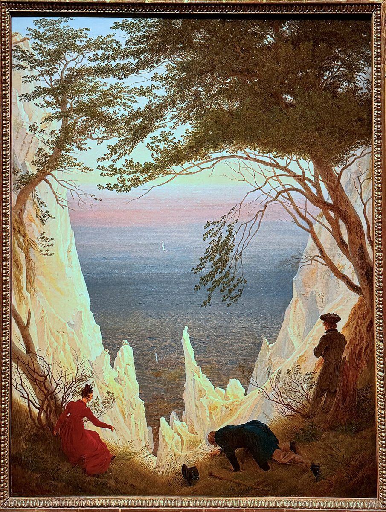

Discover the Majestic Chalk Cliffs of Rügen, Germany

The chalk cliffs of Rügen, known as the Kreidefelsen, are one of Germany’s most iconic natural wonders. Located on the island of Rügen in the Baltic Sea, these dazzling white cliffs offer breathtaking views and a unique landscape that has inspired artists and travelers for centuries. Whether you’re a nature lover, photographer, or simply looking for a serene escape, the Kreidefelsen should be on your travel bucket list. Here’s everything you need to know to plan your visit.
Getting to Rügen
Rügen is easily accessible by car, train, or ferry. If you’re driving, the island is connected to mainland Germany via the Rügen Bridge. Train travelers can take regional services to Binz or Sassnitz, two popular towns near the cliffs. Ferries from neighboring towns like Stralsund offer a scenic route to the island. Once on Rügen, local buses and bike rentals make it convenient to explore the area.
Best Time to Visit
The best time to visit the Kreidefelsen is during the spring, summer, or early autumn months (May to September). The weather is mild, and the days are longer, allowing you to fully enjoy the outdoor experience. Early mornings or late afternoons are ideal for avoiding crowds and capturing the cliffs in the best light. Winter visits can be magical, but be prepared for colder temperatures and fewer amenities.
Highlights of the Kreidefelsen
1. Königsstuhl (King’s Chair): This iconic viewpoint offers panoramic views of the Baltic Sea and the cliffs. A short hike through the Jasmund National Park leads you to this must-see spot.
2. Victoria-Sicht (Victoria’s View): Another scenic lookout, Victoria-Sicht provides a stunning perspective of the cliffs and surrounding forest.
3. Stubbenkammer: This historic area features ancient beech forests and dramatic cliff formations. It’s perfect for hiking and photography.
4. Beach at Sassnitz: Below the cliffs, the sandy beach is a great place to relax and enjoy the view from below.
5. Visitor Center: Learn about the geology, flora, and fauna of the area at the Jasmund National Park Visitor Center.
Local Cuisine
After exploring the cliffs, indulge in some local Rügen specialties. Fresh seafood, especially herring and smoked fish, is a highlight. Try traditional German dishes like schnitzel or potato pancakes at one of the many local restaurants. Don’t miss out on trying Rügener Inselkäse, a local cheese, or enjoying a slice of Mecklenburg marble cake. Many eateries offer outdoor seating, so you can dine with a view of the Baltic Sea.
Tips for Your Visit
Wear comfortable shoes, as the terrain can be uneven and rocky. Bring a jacket, as the sea breeze can be chilly even in summer. If you’re planning to hike, carry water and snacks, as there are limited facilities once you’re on the trails. Respect the natural environment by staying on marked paths and avoiding picking plants or disturbing wildlife.
The chalk cliffs of Rügen are a true natural treasure, offering a mix of stunning landscapes, outdoor adventure, and cultural charm. Plan your trip well, and you’re sure to leave with unforgettable memories.
Haiktec
- The Etsy Seller's Growth Handbook: 7 Proven Steps to Boost Your Online Store
- Caregiver Expense Tracker & Budget Planner for Seniors
- The Freelancer's Guide to Work-Life Balance: Simple Strategies for Busy Families
Text mit KI erstellt und automatisch geprueft.